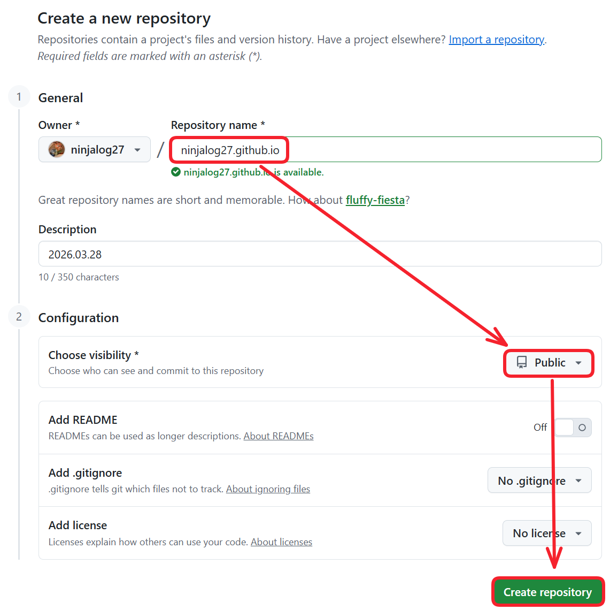
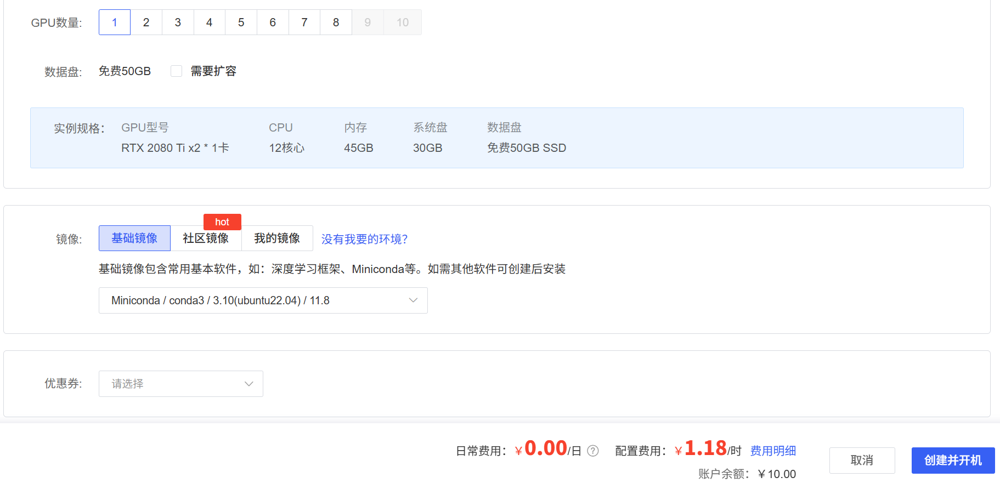
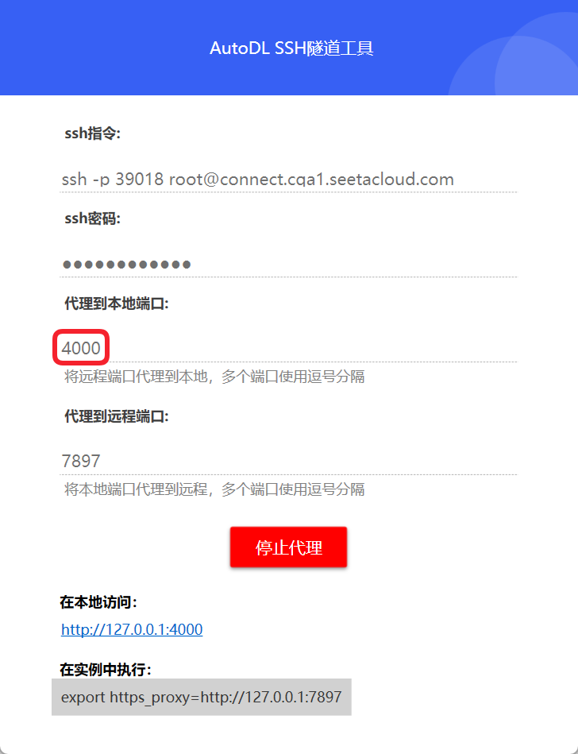

一、部署网站
1. 创建 Github Pages 仓库
GitHub 主页右上角加号 -> New repository：
- Repository name 中输入
用户名.github.io - 勾选 “Initialize this repository with a README”
- Description 选填
填好后点击 Create repository 创建。

创建后默认自动启用 HTTPS，博客地址为：https://ninjialog27.github.io
2. 租 AutoDL 服务器
不跑深度学习，这块随便选就行：

创建好了后迅速关机并且用无卡模式开机进行后续配置。
用AutoDL官方提供的学术资源加速指令：
source /etc/network_turbo3. 登录 AutoDL 服务器
进入 AutoDL 的 Linux 终端，下面默认按 Ubuntu/Linux 这种常见环境来写。
先更新包索引：
sudo apt update4. 安装 Git 和 Node.js
Hexo 依赖 Node.js，命令行操作会用到 Git；Hexo 官方安装文档要求先准备 Node.js 和 Git。
先检查服务器中是否有 Git（租的服务器一般都自带）：
git --version如果已经有git工具则不用再次安装，如果没有就按照这个指令装 Git：
sudo apt install -y git然后装 Node.js 和 npm：
curl -fsSL https://deb.nodesource.com/setup_20.x | bash -
apt install -y nodejs检查：
node -v
npm -v5. 安装 Hexo CLI
Hexo 官方命令体系依赖 hexo-cli。执行：
sudo npm install -g hexo-cli检查：
hexo -v6. 初始化 Hexo 站点
在你想放项目的目录下执行，例如放在 home 目录：
cd ~
hexo init ninja
cd ninja
npm installHexo 官方说明 hexo init [folder] 会初始化一个站点。
这一步之后，目录大概会有这些关键文件：
_config.yml：总站点配置source/_posts/：文章目录themes/：主题目录package.json：依赖配置
7. 先本地生成一次，确认 Hexo 没问题
先生成：
hexo g再启动预览：
hexo sHexo 官方说明 hexo server 默认在 http://localhost:4000/ 提供预览。
想在本地进行预览，就用 AutoDL 提供的隧道工具进行连接，配置方式如下：

8. 配置 Git 身份
在 AutoDL 里配置 GitHub 身份：
git config --global user.name "Github 用户名"
git config --global user.email "Github 邮箱"检查：
git config --global --list9. 给 AutoDL 配置 SSH，允许推送到 GitHub
后面要从 AutoDL 直接 hexo d 推到 GitHub，所以要让这台机器有权限。
1）生成 SSH key
ssh-keygen -t ed25519 -C "你的GitHub邮箱"注意此处需要一路回车，完毕后再进行后续的步骤。
2）查看公钥
cat ~/.ssh/id_ed25519.pub复制输出内容。
3）去 GitHub 添加 SSH key
GitHub 网页中：
- Settings
- SSH and GPG keys
- New SSH key
- 粘贴刚才的公钥
4）测试连接
ssh -T git@github.com能连通后，说明：
- AutoDL 这台机器已经有权限推送到你的 GitHub 仓库
- 可以继续做 Hexo 部署配置 了
10. 安装 Hexo 的 Git 部署插件
先回到 Hexo 项目目录，比如我现在是 ~/ninja：
cd ~/ninja
npm install hexo-deployer-git --save这一步的作用是：让 hexo d 能把生成好的静态网页直接推到 GitHub 仓库。
11. 修改 _config.yml
直接用 AutoDL 自带的 JupyterLab 打开项目根目录下的 _config.yml，把最下面的 deploy: 改成这样：
deploy:
type: git
repo: git@github.com:你的GitHub用户名/你的GitHub用户名.github.io.git
branch: main注意两点：
- 仓库名要真的是
你的用户名.github.io - 分支一般是
main，如果你仓库默认分支是master，就改成master
12. 先写一篇测试文章
执行：
hexo new "我的第一篇笔记"然后编辑新生成的文章文件，一般在：
source/_posts/我的第一篇笔记.md打开它：
nano source/_posts/我的第一篇笔记.md随便写一点内容，比如：
---
title: 我的第一篇笔记
date: 2026-03-28 10:30:00
tags:
- 测试
categories:
- 笔记
---
这是我用 Hexo 搭建的个人网站测试文章。13. 生成并部署
执行：
hexo clean
hexo g
hexo d如果一切正常，Hexo 会：
- 生成静态网页
- 通过 Git 推到你的
用户名.github.io仓库
此时访问 https://用户名.github.io/ 即可。
二、维护源码仓库
1. 进入源码目录
cd ~/ninja2. 建 .gitignore
vi .gitignore填入：
node_modules/
public/
.deploy_git/
db.json
.DS_Store保存退出。
3. 初始化并连接 private 仓库
假设你已经在 GitHub 上建好了一个 private 仓库，名字叫 ninja-source：
git init
git branch -M main
git remote add origin git@github.com:你的GitHub用户名/ninja-source.git
git add .
git commit -m "init hexo source"
git push -u origin main如果之前已经 git init 过，就不用重复 init，只需要看 remote 怎么配。
4. 以后每次改主题/改文章时
都可以这样：
cd ~/ninja
git add .
git commit -m "change theme" # 双引号里面的是这次提交源码的备注
git push
hexo clean && hexo g && hexo d # 这是网站发布流程5. 以后的完整顺序
改源码
→ 生成并部署网站
→ 生成并部署网站
三、修改主题
这部分更好的教程可以参考：Hexo博客主题之hexo-theme-matery的介绍。
1. 下载主题到 themes/
主题 README 给的标准方式之一就是在 themes 目录里直接 git clone。
执行：
cd ~/ninja/themes
git clone https://github.com/blinkfox/hexo-theme-matery.git下载完成后确认一下：
ls ~/ninja/themes应该能看到：
hexo-theme-matery2. 把站点切换到这个主题
打开站点根目录的 _config.yml，不是主题里的那个：
cd ~/ninja
vi _config.yml找到这一行：
theme:改成：
theme: hexo-theme-matery这正是主题 README 要求的切换方式。
顺手把这几个也检查一下，主题 README 也建议改：
url: https://ninjalog27.github.io
language: zh-CN
per_page: 12其中：
url要写你网站主地址language如果你主要写中文，建议zh-CNper_page主题作者建议设成 6 的倍数，比如12、18，这样列表页排版更整齐。
3. 先别急着高级配置，先最小启动
这一步只做最小改动，先确认主题能跑起来。
执行：
cd ~/ninja
hexo clean
hexo g如果不报错，再开预览：
hexo s打开：http://localhost:4000/ 进行预览。
4. 创建主题要求的几个核心页面
matery 不是只改个 theme: 就完事，它还希望你补几个页面。README 明确给出了 categories、tags、about 的创建方式，contact 和 friends 是可选。
创建分类页
cd ~/ninja
hexo new page "categories"
vi source/categories/index.md把内容改成：
---
title: categories
date: 2026-03-28 12:00:00
type: "categories"
layout: "categories"
---创建标签页
hexo new page "tags"
vi source/tags/index.md改成：
---
title: tags
date: 2026-03-28 12:00:00
type: "tags"
layout: "tags"
---创建关于页
hexo new page "about"
vi source/about/index.md改成：
---
title: about
date: 2026-03-28 12:00:00
type: "about"
layout: "about"
---这三页是必须先补；不然主题菜单和页面结构会不完整。README 是这样要求的。
5. 可选页面：联系页和友链页
如果暂时不需要，可以先不建。
联系页
README 给出的 front-matter 是：
hexo new page "contact"
vi source/contact/index.md填：
---
title: contact
date: 2026-03-28 12:00:00
type: "contact"
layout: "contact"
---友链页
hexo new page "friends"
vi source/friends/index.md最少写成：
---
title: friends
date: 2026-03-28 12:00:00
type: "friends"
layout: "friends"
---
[
{
"avatar": "https://github.githubassets.com/favicons/favicon.png",
"name": "GitHub",
"introduction": "Code hosting platform",
"url": "https://github.com/",
"title": "Visit"
}
]主题 README 里给了 friends 页的 JSON 结构示例。
6. 主题配置文件要改哪一个
接下来你要开始改的是：
~/ninja/themes/hexo-theme-matery/_config.yml不是站点根目录的 _config.yml。
打开：
vi ~/ninja/themes/hexo-theme-matery/_config.yml你最先应该改的几项通常是：
- 顶部菜单
- 社交链接
- 头像
- about 页面个人信息
- 首页 banner / 轮播
- 是否开启樱花、点击爱心等效果
这个主题自己的 _config.yml 里有大量配置项，比如：
profile.avatarprofile.careerprofile.introductionmyProjectsclicklove.enablesakura.enablemouseStar.enablesnowdown.enable
这些都在主题配置里。
7. 最建议先改这三块
1）关于页个人信息
在主题 _config.yml 里，把：
profile:
avatar: /medias/avatar.jpg
career: Software Engineer
introduction: ...改成你自己的内容。这个字段就是 about 页的个人资料区。
2）我的项目
myProjects 默认带的是主题作者自己的项目。你如果不改，站上会显示别人的内容。主题配置文件里这个模块默认是启用的。
你有两种处理方式：
要么关掉：
myProjects:
enable: false要么换成你自己的项目内容。
3）页面特效
clicklove.enable 默认是 true，sakura、mouseStar、snowdown 默认是 false。如果你不喜欢点击冒爱心，直接关掉。
比如：
clicklove:
enable: false8. 可选插件：字数统计
主题配置里明确写了，如果你要开文章字数、阅读时长、总字数统计，需要先安装 hexo-wordcount，对应配置在 postInfo。
如果你想开，就执行：
cd ~/ninja
npm i --save hexo-wordcount然后在主题 _config.yml 里把：
postInfo:
wordCount: true
totalCount: true
min2read: true如果你暂时不需要，就保持默认 false。
9. 可选：数学公式
如果你以后写数学公式，这个主题支持 MathJax，但要两步：
- 在主题配置里把
mathjax.enable打开 - 在需要公式的文章 front-matter 里再加
mathjax: true
这是主题配置文件里明确写的。
所以如果你暂时不写公式，先不用动。
10. 头像和图片资源
这个主题默认会读 /medias/avatar.jpg 这类资源路径。主题配置里 profile.avatar 的默认值就是 /medias/avatar.jpg。读取的是这个文件夹下的文件ninja/themes/hexo-theme-matery/source/medias。用新的图片覆盖即可。
11. 重新生成，检查有没有报错
改完后执行：
cd ~/ninja
hexo clean
hexo g如果这一步报错，先不要部署，先修。
如果没报错，再部署：
hexo d此时会 push 不上去，说是检测到了密钥，此时打开报错信息中的那个链接，然后选择“It’s a false positive”提交，然后再进行部署即可。
12. 推送源码
保存源码之前，先把 themes/hexo-theme-matery 从“嵌套 Git 仓库”变成“普通目录”，不然上传到Github时，外层 ninja-source 仓库就会把它当成一个独立仓库引用，不是普通目录内容，这样的话，在这个主题目录中做的文件修改将不会被备份。
方案：删除主题目录里的 .git
在 AutoDL 上执行：
cd ~/ninja/themes/hexo-theme-matery
rm -rf .git这一步的意思是：
- 不再把
hexo-theme-matery当成独立仓库 - 让它变成你源码仓库里的普通文件夹
然后回到项目根目录重新提交：
cd ~/ninja
git add .
git commit -m "convert matery theme to regular folder"
git push这样推上去后，GitHub 里这个目录就会变成普通文件夹，可以正常点进去。
如果还是不行，就执行下面：
cd ~/ninja
git rm --cached themes/hexo-theme-matery
rm -rf .git/modules/themes/hexo-theme-matery
git add themes/hexo-theme-matery
git commit -m "fix matery theme from gitlink to normal directory"
git push13. 先保存源码，再部署更稳
你已经有源码私有仓库的话，我建议顺序是：
cd ~/ninja
git add .
git commit -m "switch to matery theme"
git push
hexo clean && hexo g && hexo d这样你的源码改动先有备份，再发站点。
hexo clean && hexo g && hexo s